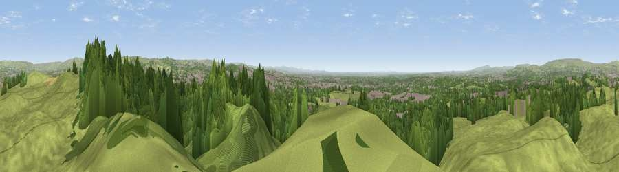

Tandle Hill
#8705 in England · top 10% of its area beats it · near ThornhamThe view, rendered

A 360° render of this exact spot computed from the terrain model, tree cover and land cover — summer colours, afternoon light, calibrated against photographs of famous viewpoints. Real trees, hedges and buildings will differ in detail.
The panorama
Grey silhouette: terrain skyline in each direction (720 bearings, Earth curvature and refraction included). Dashed green: skyline with trees (+15 m) and buildings (+8 m) as obstacles. Blue strip: how far the ground is visible on each bearing.
Where the view opens
Wedge length = distance to the farthest visible ground on that bearing (vegetation-aware). Rings at 10, 25 and 50 km.
What fills the view
46% grassland · 42% woodland · 11% built-up
Angular shares of the visible panorama (visual magnitude), not map area. Landscape diversity 0.43 (0–1 Shannon).
Key numbers
More beautiful places nearby
The staircase of upgrades: each row has a higher view potential than everything closer. Driving times are estimates from straight-line distance, calibrated against real road routing — check an actual route before setting out.
| Place | Direction | Drive | Score |
|---|---|---|---|
| Viewpoint near Shaw | E · 5 km | ~12 min | 69.1 |
| Viewpoint near Shaw | E · 6 km | ~12 min | 72.9 |
| Viewpoint near Carrbrook | SE · 11 km | ~21 min | 74.0 |
| Viewpoint near Greenfield | ESE · 12 km | ~22 min | 76.0 |
| Viewpoint near Carrbrook | SE · 13 km | ~23 min | 77.1 |
| Viewpoint near Edenfield | NW · 13 km | ~23 min | 77.5 |
| White Brow | W · 24 km | ~39 min | 82.9 |
| Warton Crag | NNW · 76 km | ~100 min | 83.2 |
53.57559, -2.15136 · source: osm peak · position refined by local search. Computed location — check access rights before visiting.